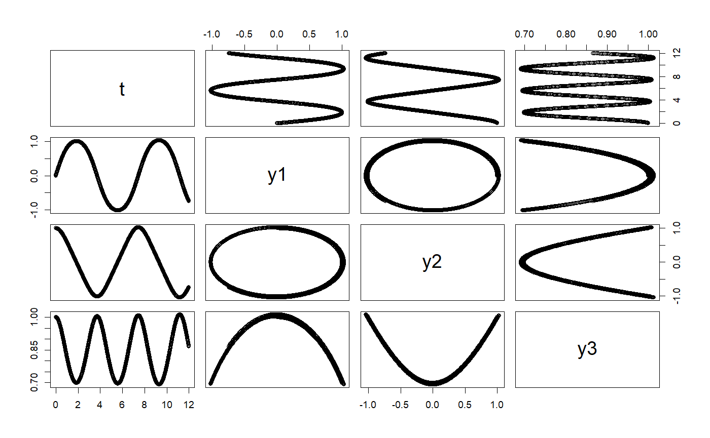
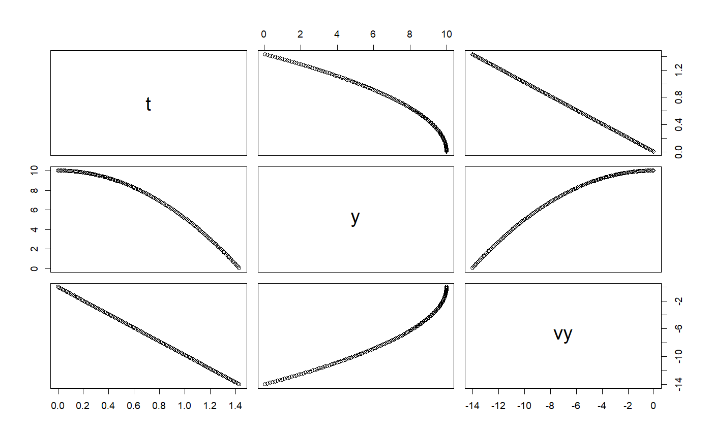

Euler class
Euler class
Euler constructor when `ODE` passed
Euler constructor `missing` is passed
Euler(ode, ...) # S4 method for ODE Euler(ode, ...) # S4 method for missing Euler(ode, ...)
Arguments
| ode | an ODE object |
|---|---|
| ... | additional parameters |
Examples
# +++++++++++++++++++++++++++++++++++++++++++++++ application: RigidBodyNXFApp.R # example of a nonstiff system is the system of equations describing # the motion of a rigid body without external forces. importFromExamples("RigidBody.R") # run the application RigidBodyNXFApp <- function(verbose = FALSE) { # load the R class that sets up the solver for this application y1 <- 0 # initial y1 value y2 <- 1 # initial y2 value y3 <- 1 # initial y3 value dt <- 0.01 # delta time for step body <- RigidBodyNXF(y1, y2, y3) solver <- Euler(body) solver <- setStepSize(solver, dt) rowVector <- vector("list") i <- 1 # stop loop when the body hits the ground while (getState(body)[4] <= 12) { rowVector[[i]] <- list(t = getState(body)[4], y1 = getState(body)[1], y2 = getState(body)[2], y3 = getState(body)[3]) solver <- step(solver) body <- getODE(solver) i <- i + 1 } DT <- data.table::rbindlist(rowVector) return(DT) } # get the data table from the app solution <- RigidBodyNXFApp()#>#>plot(solution)# +++++++++++++++++++++++++++++++++++++++++++++++ example: FallingParticleApp.R # Application that simulates the free fall of a ball using Euler ODE solver importFromExamples("FallingParticleODE.R") # source the class FallingParticleODEApp <- function(verbose = FALSE) { # initial values initial_y <- 10 initial_v <- 0 dt <- 0.01 ball <- FallingParticleODE(initial_y, initial_v) solver <- Euler(ball) # set the ODE solver solver <- setStepSize(solver, dt) # set the step rowVector <- vector("list") i <- 1 # stop loop when the ball hits the ground, state[1] is the vertical position while (getState(ball)[1] > 0) { rowVector[[i]] <- list(t = getState(ball)[3], y = getState(ball)[1], vy = getState(ball)[2]) solver <- step(solver) # move one step at a time ball <- getODE(solver) # update the ball state i <- i + 1 } DT <- data.table::rbindlist(rowVector) return(DT) } # show solution solution <- FallingParticleODEApp() plot(solution)# KeplerVerlet.R setClass("Kepler", slots = c( GM = "numeric", odeSolver = "Euler", counter = "numeric" ), contains = c("ODE") ) setMethod("initialize", "Kepler", function(.Object, ...) { .Object@GM <- 4 * pi * pi # gravitation constant times combined mass .Object@state <- vector("numeric", 5) # x, vx, y, vy, t .Object@odeSolver <- Euler(.Object) .Object@counter <- 0 return(.Object) })#> [1] "initialize"setMethod("doStep", "Kepler", function(object, ...) { # cat("state@doStep=", object@state, "\n") object@odeSolver <- step(object@odeSolver) object@state <- object@odeSolver@ode@state # object@rate <- object@odeSolver@ode@rate # cat("\t", object@odeSolver@ode@state) object })#> [1] "doStep"setMethod("getTime", "Kepler", function(object, ...) { return(object@state[5]) })#> [1] "getTime"setMethod("getEnergy", "Kepler", function(object, ...) { ke <- 0.5 * (object@state[2] * object@state[2] + object@state[4] * object@state[4]) pe <- -object@GM / sqrt(object@state[1] * object@state[1] + object@state[3] * object@state[3]) return(pe+ke) })#> [1] "getEnergy"setMethod("init", "Kepler", function(object, initState, ...) { object@state <- initState object@odeSolver <- init(object@odeSolver, getStepSize(object@odeSolver)) object@counter <- 0 object })#> [1] "init"setReplaceMethod("init", "Kepler", function(object, ..., value) { object@state <- value object@odeSolver <- init(object@odeSolver, getStepSize(object@odeSolver)) object@counter <- 0 object })#> [1] "init<-"setMethod("getRate", "Kepler", function(object, state, ...) { # Computes the rate using the given state. r2 <- state[1] * state[1] + state[3] * state[3] # distance squared r3 <- r2 * sqrt(r2) # distance cubed object@rate[1] <- state[2] object@rate[2] <- (- object@GM * state[1]) / r3 object@rate[3] <- state[4] object@rate[4] <- (- object@GM * state[3]) / r3 object@rate[5] <- 1 # time derivative # object@state <- object@odeSolver@ode@state <- state # object@state <- state object@counter <- object@counter + 1 object@rate })#> [1] "getRate"setMethod("getState", "Kepler", function(object, ...) { # Gets the state variables. return(object@state) })#> [1] "getState"# constructor Kepler <- function() { kepler <- new("Kepler") return(kepler) } # ++++++++++++++++++++++++++++++++++++++++++++++++++++++++ example: PlanetApp.R # Simulation of Earth orbiting around the SUn using the Euler ODE solver importFromExamples("Planet.R") # source the class PlanetApp <- function(verbose = FALSE) { # x = 1, AU or Astronomical Units. Length of semimajor axis or the orbit # of the Earth around the Sun. x <- 1; vx <- 0; y <- 0; vy <- 6.28; t <- 0 state <- c(x, vx, y, vy, t) dt <- 0.01 planet <- Planet() planet@odeSolver <- setStepSize(planet@odeSolver, dt) planet <- init(planet, initState = state) rowvec <- vector("list") i <- 1 # run infinite loop. stop with ESCAPE. while (getState(planet)[5] <= 90) { # Earth orbit is 365 days around the sun rowvec[[i]] <- list(t = getState(planet)[5], # just doing 3 months x = getState(planet)[1], # to speed up for CRAN vx = getState(planet)[2], y = getState(planet)[3], vy = getState(planet)[4]) for (j in 1:5) { # advances time planet <- doStep(planet) } i <- i + 1 } DT <- data.table::rbindlist(rowvec) return(DT) } # run the application solution <- PlanetApp() select_rows <- seq(1, nrow(solution), 10) # do not overplot solution <- solution[select_rows,] plot(solution)# +++++++++++++++++++++++++++++++++++++++++++++++ application: RigidBodyNXFApp.R # example of a nonstiff system is the system of equations describing # the motion of a rigid body without external forces. importFromExamples("RigidBody.R") # run the application RigidBodyNXFApp <- function(verbose = FALSE) { # load the R class that sets up the solver for this application y1 <- 0 # initial y1 value y2 <- 1 # initial y2 value y3 <- 1 # initial y3 value dt <- 0.01 # delta time for step body <- RigidBodyNXF(y1, y2, y3) solver <- Euler(body) solver <- setStepSize(solver, dt) rowVector <- vector("list") i <- 1 # stop loop when the body hits the ground while (getState(body)[4] <= 12) { rowVector[[i]] <- list(t = getState(body)[4], y1 = getState(body)[1], y2 = getState(body)[2], y3 = getState(body)[3]) solver <- step(solver) body <- getODE(solver) i <- i + 1 } DT <- data.table::rbindlist(rowVector) return(DT) } # get the data table from the app solution <- RigidBodyNXFApp() plot(solution)